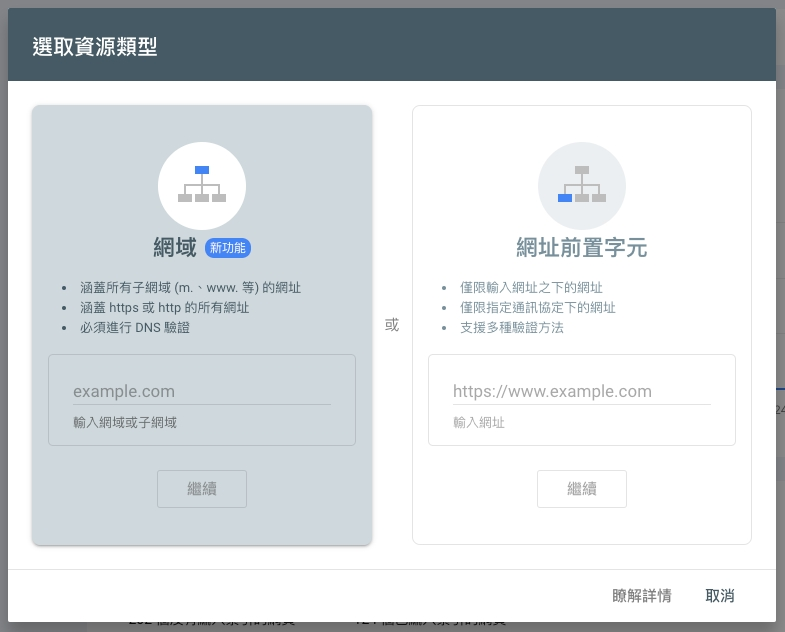
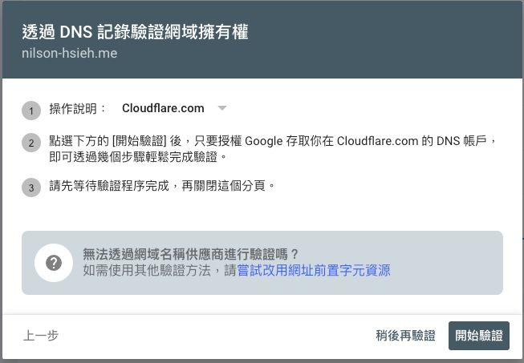
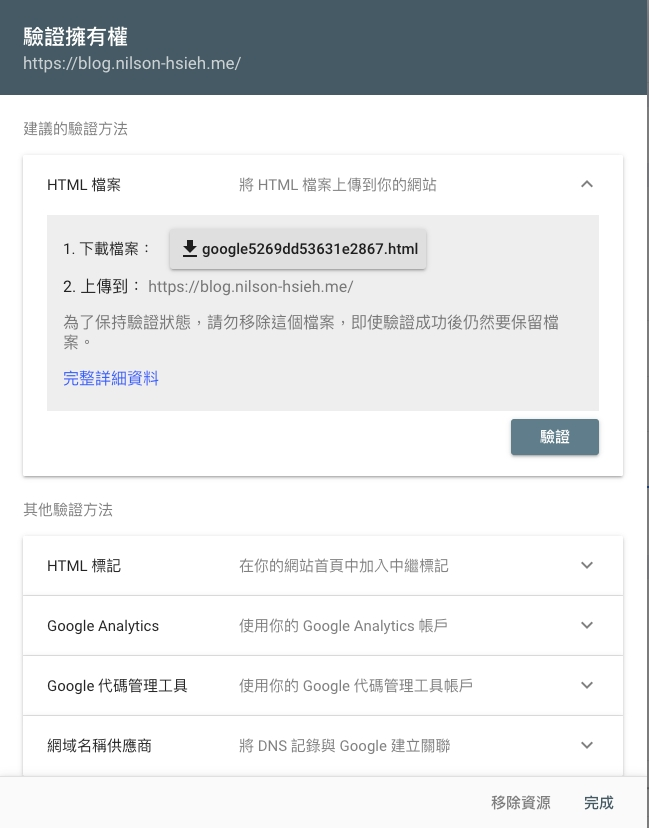
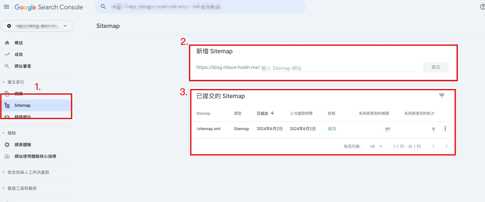

加快瀏覽器收錄你的網站
前言
最近常常會遇到顧客說要怎麼加速瀏覽器收錄自己的網站，這篇就來教學如何將網站地圖( sitemap ) 提交給 google 瀏覽器，讓他更快收入網站內容
什麼是 Google Search Console
Google Search Console 是Google 推出的網站管理工具，可提交網站地圖，告訴瀏覽器整個網站抓取的頻率、架構、網址等等，是做 SEO 非常重要的工具
製作網站地圖
網站地圖我們俗稱 sitemap ，我們這篇使用將使用網路上現成的 sitemap 生成器來製作 sitemap ，在下一篇將會更仔細的介紹sitemap 裡面的設定
這邊有推薦幾個
這兩個網站對於剛開始起步的網站就非常的夠用了，只要輸入網址，他就會自動產生網站的 sitemap ，產完之後下載放到網站根目錄即可
驗證網址擁有權
這步驟者主要是 google 要確認是不是這個網址的管理員，我們前往 Google Search Console 登入 google 帳號後右上角有新增資源
驗證的方式有分兩種
- 驗證網域
- 驗證網址前置字元

驗證網域
選擇驗證網域只能夠過 DNS 驗證，驗證過程中會一步一步的引導設定

驗證網址前置字元
驗證網址前置字元的方法就比較多了，有 HTML 標記 、透過 GA 、透過 DNS 驗證，驗證過程中也是會一步一步的引導設定

驗證完成後就可以準備提交 sitemap 了
提交 sitemap
驗證完成後前往 左側選單 > 產稱索引 > sitemap

新增 Sitemap 的欄位 打上剛剛第一步產生的 Sitemap 檔案名稱，按下新增
完成新增後可以在 已提交的 Sitemap 查看到相關的資訊，看到完成後就可以等待瀏覽器抓取你的網站囉